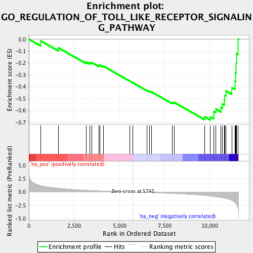
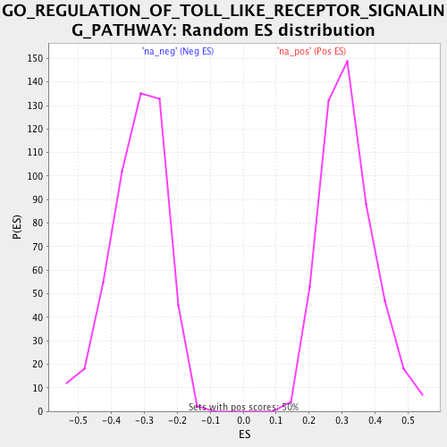

| | | Dataset | RG_nDM |
| Phenotype | NoPhenotypeAvailable |
| Upregulated in class | na_neg |
| GeneSet | GO_REGULATION_OF_TOLL_LIKE_RECEPTOR_SIGNALING_PATHWAY |
| Enrichment Score (ES) | -0.68065417 |
| Normalized Enrichment Score (NES) | -2.1226704 |
| Nominal p-value | 0.0 |
| FDR q-value | 0.0068978495 |
| FWER p-Value | 0.018 |
Table: GSEA Results Summary

Fig 1: Enrichment plot: GO_REGULATION_OF_TOLL_LIKE_RECEPTOR_SIGNALING_PATHWAY
Profile of the Running ES Score & Positions of GeneSet Members on the Rank Ordered List
| PROBE | GENE SYMBOL | GENE_TITLE | RANK IN GENE LIST | RANK METRIC SCORE | RUNNING ES | CORE ENRICHMENT | | 1 | NR1H3 | | | 643 | 1.230 | -0.0121 | No |
| 2 | CD14 | | | 1638 | 0.740 | -0.0720 | No |
| 3 | CAV1 | | | 3171 | 0.362 | -0.1918 | No |
| 4 | TIRAP | | | 3352 | 0.331 | -0.1957 | No |
| 5 | TICAM1 | | | 3465 | 0.311 | -0.1944 | No |
| 6 | SARM1 | | | 3859 | 0.251 | -0.2195 | No |
| 7 | LYN | | | 3925 | 0.239 | -0.2166 | No |
| 8 | IRAK3 | | | 4125 | 0.208 | -0.2265 | No |
| 9 | IRF4 | | | 5566 | 0.020 | -0.3505 | No |
| 10 | FLOT1 | | | 5743 | 0.000 | -0.3658 | No |
| 11 | FLOT2 | | | 6527 | -0.093 | -0.4303 | No |
| 12 | TNFAIP3 | | | 6676 | -0.115 | -0.4390 | No |
| 13 | LY96 | | | 6779 | -0.128 | -0.4433 | No |
| 14 | ARRB2 | | | 7911 | -0.278 | -0.5314 | No |
| 15 | PELI1 | | | 8035 | -0.299 | -0.5315 | No |
| 16 | CYBA | | | 9705 | -0.658 | -0.6527 | No |
| 17 | UBQLN1 | | | 10029 | -0.769 | -0.6534 | Yes |
| 18 | WDFY1 | | | 10216 | -0.852 | -0.6393 | Yes |
| 19 | RSAD2 | | | 10225 | -0.857 | -0.6097 | Yes |
| 20 | TICAM2 | | | 10313 | -0.895 | -0.5855 | Yes |
| 21 | PIK3AP1 | | | 10609 | -1.036 | -0.5743 | Yes |
| 22 | SMPDL3B | | | 10691 | -1.075 | -0.5433 | Yes |
| 23 | HMGB1 | | | 10800 | -1.152 | -0.5118 | Yes |
| 24 | GFI1 | | | 10815 | -1.162 | -0.4718 | Yes |
| 25 | PDPK1 | | | 10885 | -1.226 | -0.4344 | Yes |
| 26 | IRF7 | | | 11206 | -1.568 | -0.4065 | Yes |
| 27 | PTPN22 | | | 11382 | -1.951 | -0.3525 | Yes |
| 28 | BIRC2 | | | 11423 | -2.131 | -0.2805 | Yes |
| 29 | IRF1 | | | 11456 | -2.266 | -0.2030 | Yes |
| 30 | TLR9 | | | 11477 | -2.388 | -0.1201 | Yes |
| 31 | BIRC3 | | | 11568 | -3.633 | 0.0008 | Yes |
Table: GSEA details [plain text format]

Fig 2: GO_REGULATION_OF_TOLL_LIKE_RECEPTOR_SIGNALING_PATHWAY: Random ES distribution
Gene set null distribution of ES for GO_REGULATION_OF_TOLL_LIKE_RECEPTOR_SIGNALING_PATHWAY